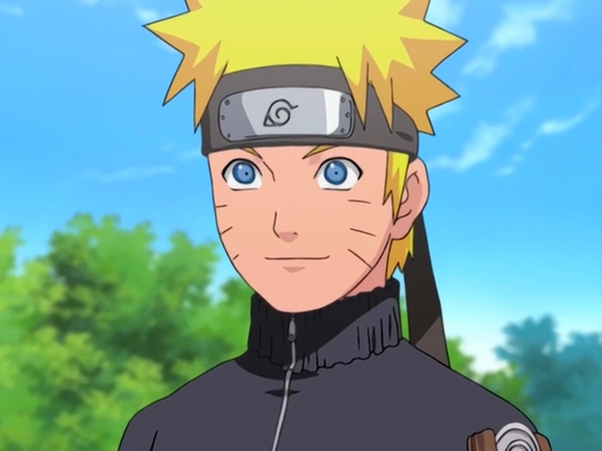
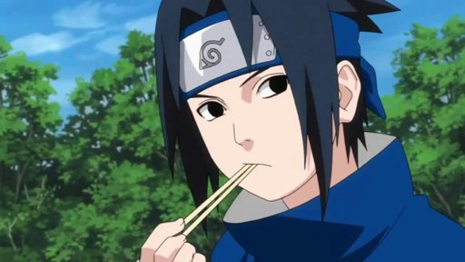
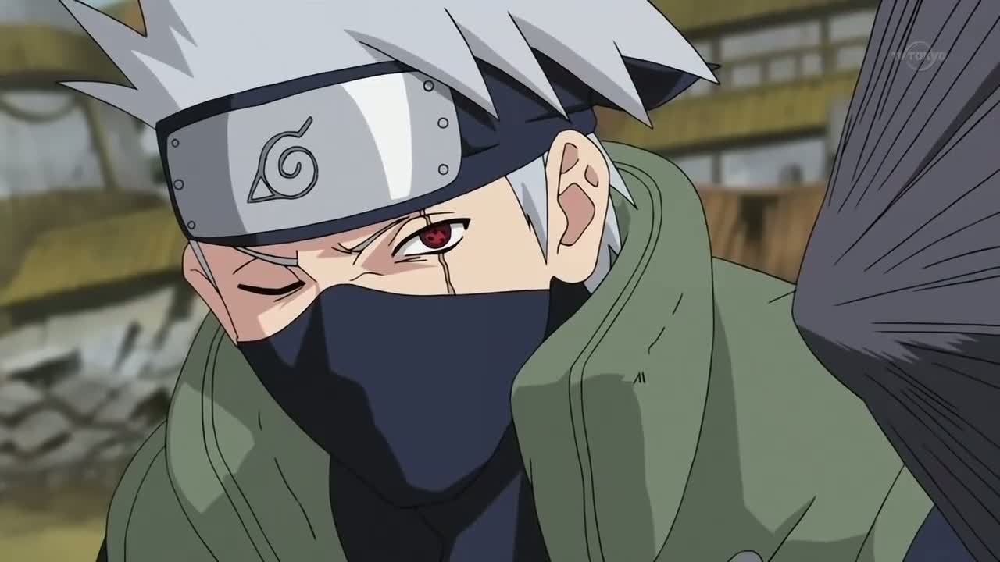
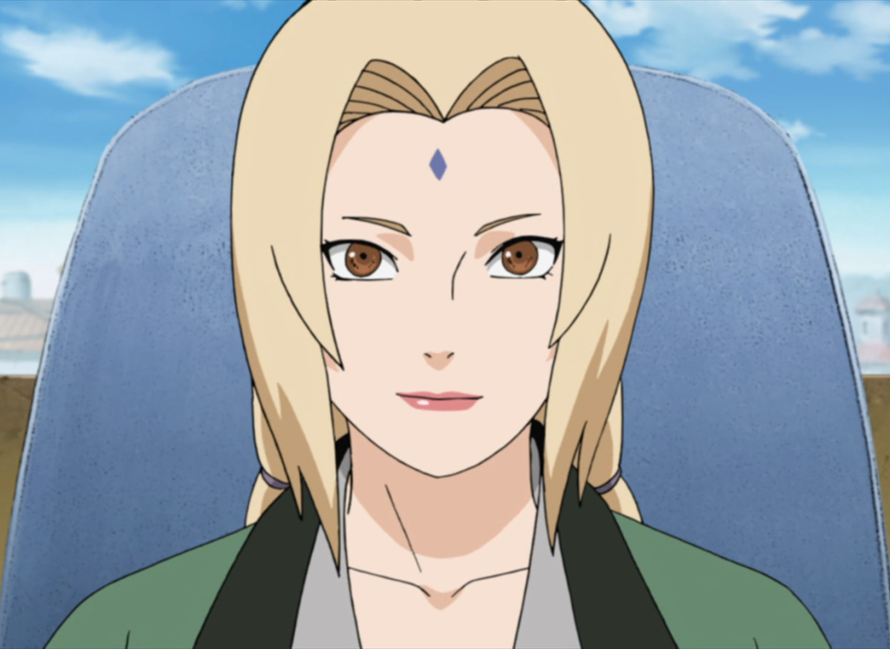
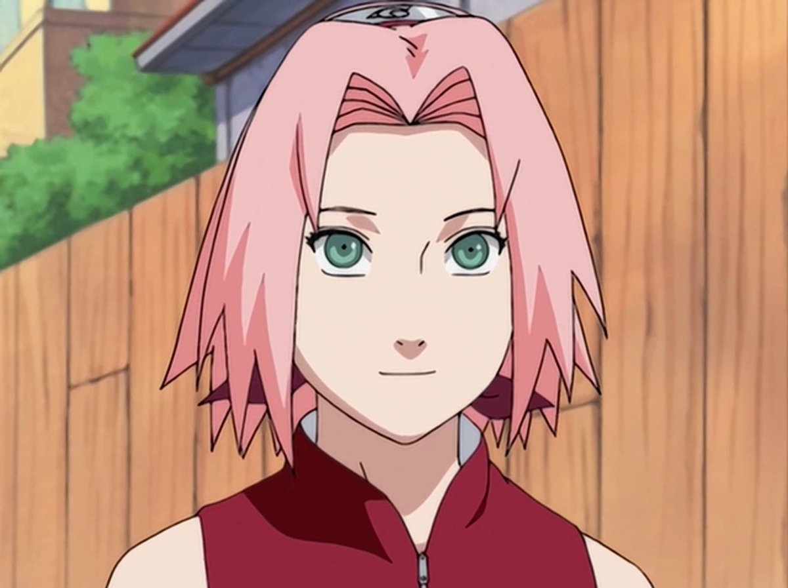
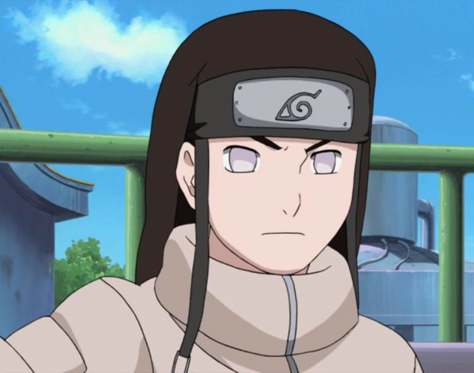
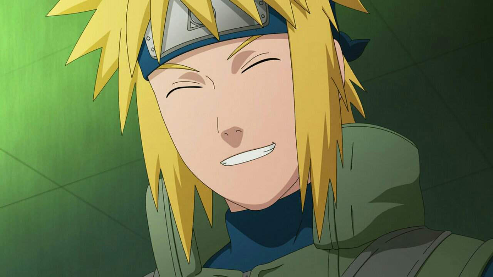
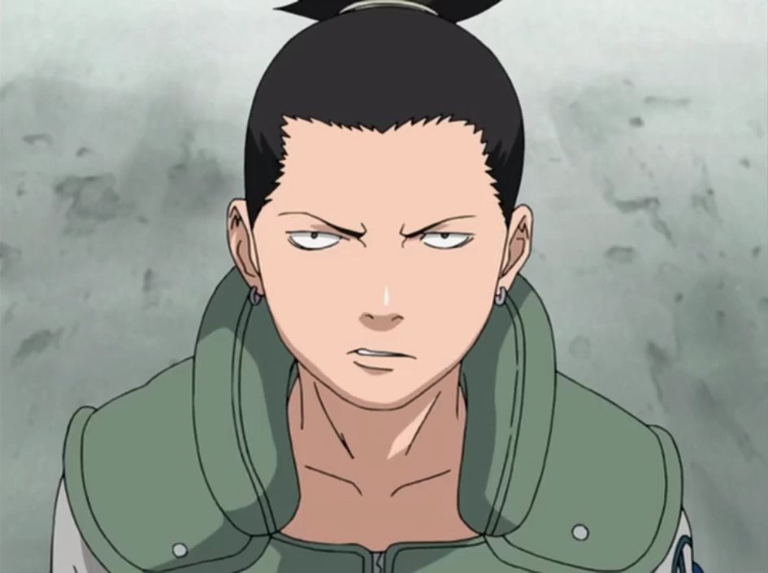

Наруто Узумаки
Будущий хокаге
Шиноби Конохагакуре из клана Узумаки. Он стал Джинчурики Кьюби в день своего рождения, в результате чего, из-за нелёгкой судьбы, другие жители деревни сторонились его в течение детства мальчика.
Узнать больше

Саске Учиха
Беженец
один из последних выживших членов клана Учиха из Деревни Скрытого Листа. После того, как его старший брат Итачи вырезал весь их клан, Саске поставил перед собой жизненную цель отомстить за клан и семью, убив Итачи.
Узнать больше

Какаши Хатаке
Копирующий ниндзя
шиноби Скрытого Листа из клана Хатаке. Более известный как Какаши Шарингана, он является одним из самых талантливых ниндзя Конохи, к кому регулярно обращаются за советом или просят лидерства, несмотря на его личную нелюбовь к ответственности.
Узнать больше

Цунаде
Пятый Хокаге
потомок клана Сенджу и одна из Саннинов Скрытого Листа. Известна как сильнейшая в мире куноичи, до того как Сакура превзошла ее, а также как величайший ниндзя-медик.
Узнать больше

Сакура Харуно
Цунаде №2
Куноичи из Скрытого Листа. Став частью Команды 7, Сакура быстро осознаёт свою неподготовленность к суровой жизни шиноби.
Узнать больше

Неджи Хьюга
Всевидящий
Был членом Клана Хьюга из Скрытого Листа. Будучи одарённым даже по стандартам Хьюга, Неджи был членом побочной ветви клана; не зависимо от того, насколько сильным он стал, он всегда оставался на службе главной ветви Хьюга.
Узнать больше

Минато Намикадзе
Желтая молния Конохи
Был Четвертым Хокаге Скрытого Листа. Он умер во время Нападения Девятихвостого Демона-Лиса, пожертвовав своей жизнью, чтобы запечатать часть Девятихвостого в своём новорождённом сыне, Наруто Узумаки.
Узнать больше

Шикамару Нара
Гений
Шиноби из Клана Нара Скрытого Листа. Несмотря на ленивую натуру, Шикамару имеет редкий интеллект, который неизменно позволяет ему одержать победу в бою.
Узнать больше
Показать больше